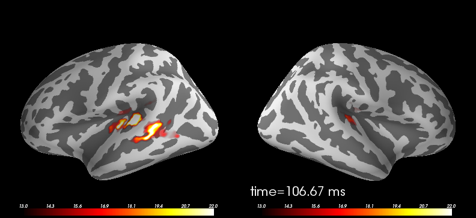

Data were computed using mne-python (http://martinos.org/mne)
Python source code: plot_meg_inverse_solution.py
print __doc__
import os
import numpy as np
from surfer import Brain, TimeViewer
from surfer.io import read_stc
"""
define subject, surface and hemisphere
"""
subject_id, surface, hemi = 'fsaverage', 'inflated', 'lh'
"""
create Brain object for visualization
"""
brain = Brain(subject_id, hemi, surface)
"""
read MNE dSPM inverse solution
"""
stc_fname = os.path.join('example_data',
'meg_source_estimate-' + hemi + '.stc')
stc = read_stc(stc_fname)
"""
data and vertices for which the data is defined
"""
data = stc['data']
vertices = stc['vertices']
"""
time points in milliseconds
"""
time = 1e3 * np.linspace(stc['tmin'],
stc['tmin'] + data.shape[1] * stc['tstep'],
data.shape[1])
"""
colormap to use
"""
colormap = 'hot'
"""
label for time annotation
"""
time_label = 'time=%0.2f ms'
brain.add_data(data, colormap=colormap, vertices=vertices, smoothing_steps=10,
time=time, time_label=time_label)
"""
scale colormap and set time (index) to display
"""
brain.set_data_time_index(2)
brain.scale_data_colormap(fmin=13, fmid=18, fmax=22, transparent=True)
"""
uncomment this line to use the interactive TimeViewer GUI
"""
#viewer = TimeViewer(brain)